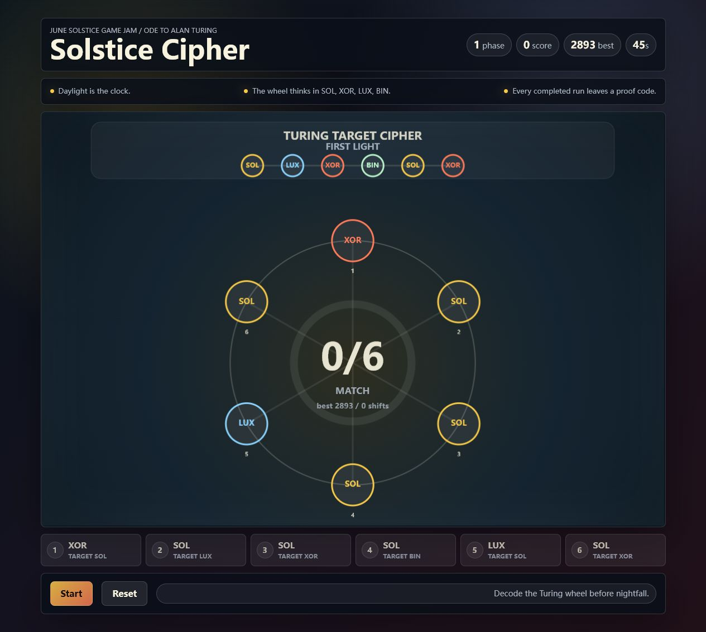

DEV June Solstice Game Jam
Helioigma is a complete four-phase rotor puzzle loop.
A small static game about holding the longest day by aligning a Turing-inspired solar rotor before nightfall. This page gives judges the play link, automated smoke receipt, theme fit, run receipt, and source path in one place.

The June solstice becomes the core timer: daylight is the player's resource, nightfall ends the run, and the final screen celebrates holding the longest day.
The puzzle makes the ode visible in play: rotor-like alignment, binary and XOR glyph language, checksum receipt, and target-versus-ring matching without pretending to simulate a historical machine.
Helioigma treats Alan Turing as more than a cipher keyword. It keeps the tribute in state, logic, verification, pressure, and machine-readable reasoning rather than pretending to recreate the Bombe or a biography.
Four named phases, visible progress strip, score carry-over, streak scoring, shift counting, manual Hint support, live Rotor Trace, one-click stable Demo Solve receipt, copyable and locally verifiable run receipt, keyboard support, explicit node buttons, mobile layout, current WebM/GIF preview, machine-readable judge manifest, and final run summary are ready.
The stable judge path produces SC-4P-2907-62-Y5VFX1. The verifier recomputes the checksum and shows phases, score, shifts, and checksum facts.
This is aimed at Best Ode to Alan Turing through mechanics and verifier design. It does not claim the Best Google AI Usage category.